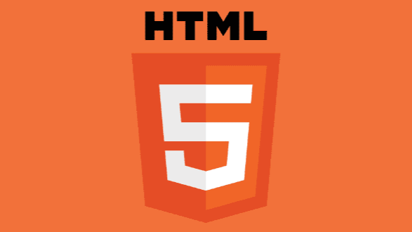

HTML
Pelajari HTML dari dasar dan pahami bagaimana struktur sebuah website dibangun. Di course ini, kamu akan mengenal berbagai tag, elemen, dan cara menulis kode yang benar agar tampilan web lebih teratur dan mudah dikembangkan.
Daftar Materi
-
01Pengenalan Dasar20 min
-
02Struktur & Elemen20 min
-
03Link & Navigasi36 min
-
04Gambar & Media40 min
-
05List12 min
-
06Table40 min
-
07Form8 min
-
08Elemen Semantik25 min
-
09Metadata & SEO Dasar18 min
-
10Resource & Asset45 min
-
11HTML 545 min
-
12Project45 min
Detail Materi
Durasi
2.5 Jam
Total Materi
12 Modul
Tipe
Front-End
Tentang Materi
Course HTML ini dirancang untuk membantu kamu memahami pondasi utama dalam pembuatan website. Mulai dari pengenalan struktur HTML, elemen penting, hingga praktik menulis kode yang efisien dan semantik.
Sangat cocok untuk pemula yang ingin memulai karier di dunia web development atau siapa pun yang ingin memahami cara kerja halaman web secara menyeluruh.
Apa yang akan kamu pelajari?
- Memahami struktur dasar dokumen HTML dan elemen penting di dalamnya
- Mengetahui perbedaan dan fungsi berbagai tag HTML
- Menggunakan teks, list, tabel, gambar, audio, dan video di halaman web
- Membuat form dengan input, validasi, dan struktur semantik yang benar
- Mengatur metadata dan optimasi dasar SEO di halaman HTML
- Mengimpor resource eksternal seperti CSS dan JavaScript ke dalam proyek
- Memahami path relatif dan absolut dalam pengaturan file project
- Menggunakan elemen-elemen baru di HTML5 seperti <video>, <audio>, <canvas>, dan <progress>
- Mengenal fitur modern HTML5 seperti LocalStorage, Drag & Drop API, dan Geolocation
- Membuat halaman web multi-page sederhana menggunakan struktur semantik yang benar
- Menulis kode HTML yang rapi, konsisten, dan mudah di-maintain
- Membuat dan mempublikasikan proyek website statis sederhana